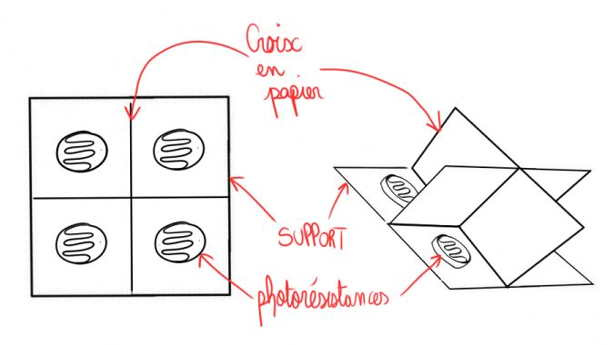

Système avec des photorésistances
Explication de la méthode
Cette méthode consiste à équiper le système de photorésistances.
Pour suivre les positions du soleil, le principe de cette méthode peut être assimilé à celui d’un cadran solaire : une pièce projette son ombre sur une plaque équipée de photorésistances permettant de comparer les valeurs d’intensité lumineuse reçues pour savoir où se trouve l’ombre.
Comment fonctionne une photorésistance ?
Programme
Ici, le code utilisé pour faire fonctionner le système --> théorie
Expérimentation
Pour tester ce programme, nous avons construit un tracker solaire avec du carton. Il a fallu tout d'abord imaginer le système.

Ensuite nous l'avons réalisé.
Nous avons apporté une modification à ce système: pouvoir connaître l'intensité maximale pour que le tracker solaire puisse être le plus optimale possible.
Conclusion
| Avantages | Inconvénients |
|---|---|
| Méthode simple, pas besoin d'utiliser de GPS pour la localisation du système, pas cher | Si la luminosité est trop basse (trop sombre), le système est inopérant |
Système avec équation de la trajectoire du Soleil
Explication de la méthode
Cette méthode consiste à équiper le système d’un GPS (Global Positioning System).
Pour suivre les positions du soleil, le système s’appuie sur un algorithme qui calcule la position du soleil en fonction de son positionnement spatial et temporel.
Avant de programmer, il fallait qu'on trouve les équations de la trajectoire du soleil en fonction du temps. On a donc cherché cette information sur Internet. Or, nous avons voulu mieux comprendre ces formules. Pour cela on s'est aidé de cours de Mathématiques sur les coordonnées sphériques mais aussi d'animation Geogebra (Exemple).

Conclusion
| Avantages | Inconvénients |
|---|---|
| Permet d'avoir les coordonnées de la position du système ainsi que la date, est plus précis car ce système à accès au ciel, fonctionne même si le soleil n'est pas visible et quelque soit la météo. | Il faut avoir des coordonées précises. (nécessite un GPS par exemple). |
Système avec une caméra
Explication de la méthode
Cette méthode consiste à équiper le système d'une caméra qui serait orientée vers le ciel. Pour savoir où est le soleil, il suffit de faire en sorte que le point le plus lumineux que la caméra voit, soit toujours au centre.
Conclusion
Malheuresement par faute de temps, nous n'avons pas pu élaborer cette méthode...
| Avantages | Inconvénients |
|---|---|
| Pas besoin de GPS, grande efficacité | Si la luminosité est trop basse (trop sombre), le système est inopérant, système qui peut être cher, peut être que la caméra va consommer trop d'énergie ? |